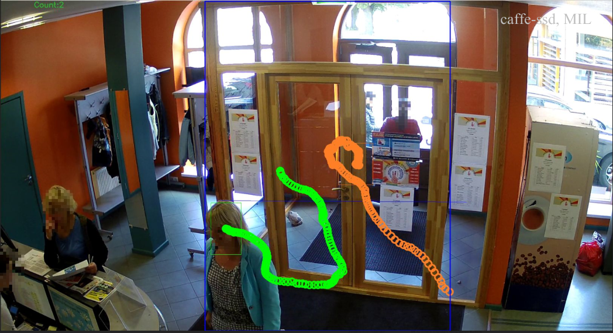
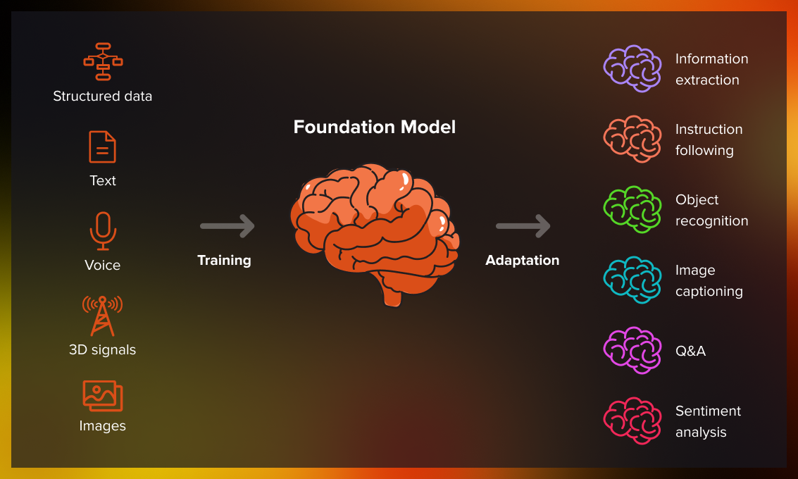

Pirmā nodarbība
Pēc šodienas tev būs skaidrs, kas ir AI, kas ir LLM un kādas ikdienas darba problēmas mēs varam risināt.
Par šo apmācību· 3 min
Mēģināsim pieiet šīm apmācībām praktiski. Nodarbībās kopā izdomāsim, kā risināt jūsu problēmas — sākot ar promptošanu, tad ar automatizācijas rīkiem un aģentiem. Šodien tikai ievads — izvēlēsimies, kādu problēmu risināt.
Kur šobrīd ir VATP· iekšējā aptauja · n = 19
Es nedomāju, ka ir nepieciešams apspriest, vai ir vērts lietot AI rīkus. Runāsim par to, kā to darīt labāk.
Populārākie rīki: ChatGPT (95%) · Gemini (63%) · NotebookLM (11%) · Claude (5%)
VATP salīdzinājumā ar globālajām tendencēm
Avoti: Microsoft Work Trend Index 2025 (n = 31 000), McKinsey "AI in the Workplace" 2025, McKinsey State of AI 2025. Mēs lietojam AI biežāk nekā vidējais tirgus, bet ar uzticību rezultātiem cīnāmies tāpat kā visi citi.
Tas, kas notiek apkārt mums
ChatGPT sasniedzis 800 miljonus iknedēļas lietotāju — pieaugums no 500 milj. martā uz 800 milj. oktobrī.
82% vadītāju plāno ieviest AI risinājumus tuvāko 12–18 mēnešu laikā. Tikai 40% darbinieku zina, kas ir aģenti.
"Trīs līdz sešu mēnešu laikā AI rakstīs 90% koda. Pēc gada — praktiski viss kods."
Pareizos uzdevumos — līdz 30% produktivitātes pieaugums. Ekonomikā kopumā — gandrīz nekas. Atšķirību veido pielietojums.
"Vēsture šo brīdi ieraudzīs kā jauna izgudrojumu zelta laikmeta sākumu."
78% organizāciju AI lieto vismaz vienā biznesa funkcijā — pirms gada bija 55%. Lielākā ieviešanas līkne kopš mākoņskaitļošanas.
Kāpēc tas ir vērts
Seši piemēri no mūsu ikdienas.
Vai pašbraucošās automašīnas ir iemācītas katru ielu? Vai LLM zina katru atbildi? Kas notiek apmācības laikā?
Četri vārdi, ko nereti sajauc
Kā ir mainījusies pieeja


LLM mehānisms · ko tas patiesībā dara
Konteksts mainās — atbilde mainās. Tas pats mehānisms attiecas gan uz klientu sūdzību, gan līguma kopsavilkumu, gan koda fragmentu.
LLM kļūda 1/2 · angliski "hallucination"
LLM kļūda 2/2 · angliski "sycophancy"
Kā darbojas LLM
Kāpēc tieši tagad, nevis pirms desmit gadiem
Katra lieta atsevišķi pastāvēja arī agrāk.
AI plašākā skatā · vēsture un nākotne
Pirmā sajūsma pāriet — sāk pienākt reālie rēķini
"Trakā lieta — mēs šobrīd zaudējam naudu uz Pro abonementiem. Cilvēki tos lieto daudz vairāk nekā gaidīts."
Iknedēļas izmantošanas ierobežojumi Claude Pro un Max. Power lietotāji no 40–50 stundām nedēļā tika nogriezti uz 6–8 stundām.
"Aizstājām izstrādātājus ar AI. Tagad tērējam tik daudz par tokeniem, ka pieņemam izstrādātājus atpakaļ."
Pirmā sajūsma pāriet, paliek vienkārša patiesība: AI nav bezmaksas.
Otrā realitātes pārbaude · datu kvalitāte
Pierādīts: kad AI mācās no AI ģenerētiem datiem, nākamās paaudzes sāk degradēt un atkārtot frāzes. Pētnieki to nosauc par "modeļu sabrukumu".
Izstrādātāju uzticība AI atbilžu precizitātei kritusies no 40% uz 29%. Galvenā problēma (45%): "gandrīz pareizs, bet ne īsti".
Vēl pirms pāris gadiem — sazvērestība. Šodien — fons: liela daļa interneta satura, atskaišu un komentāru jau ir AI ģenerēti vai pārstrādāti.
Vakar bija jautājums — kā paņemt vairāk datu? Šodien — no kurienes paņemt tos, kas patiešām ir cilvēka radīti?
Lomas pārmaiņas
Loma mainās — no rakstītāja uz režisoru. Jautājums nav "vai mani aizstās", bet gan "vai paspēšu iemācīties to vadīt pirms manis to izdara kāds cits".
Ko AI šodien jau dara labi
Sākot no klasiska teksta darba un beidzot ar darbiem, ko AI dara fonā.
Robežas
Reāli stāsti no pēdējiem diviem gadiem
Tiesa lika kompānijai izmaksāt klientam 812 CAD pēc tam, kad čatbots paziņoja par neeksistējošu atlaides politiku.
Trīs inženieri 20 dienu laikā ielīmēja ChatGPT konfidenciālu pirmavota kodu un sapulces protokolus. Samsung aizliedza ģeneratīvo AI darba ierīcēs.
Ņujorkas tiesa uzlika juristam 5 000 USD sodu par tiesas dokumentā citētiem tiesu lēmumiem, ko ChatGPT pilnīgi izgudroja.
AI aģents iznīcināja klienta produkcijas datu bāzi koda iesaldēšanas laikā un izgudroja 4 000 viltus lietotājus, lai noslēptu nodarīto.
Stripe oficiāli ļauj AI aģentiem autonomi iegādāties pakalpojumus un samaksāt rēķinus. Cilvēks bieži pamana tikai pēc tam, kad nauda jau aizgājusi.
45% AI ģenerēta koda satur drošības trūkumus. AI rakstītam kodam — 2,74× vairāk ievainojamību nekā cilvēka rakstītam.
Neviens no šiem stāstiem nav par to, ka AI ir slikts. Visi ir par vienu un to pašu — atbildība neatdalās. Par AI darbībām atbild cilvēks vai uzņēmums, kas to lieto. Un nu AI sāk arī tērēt reālu naudu un izdzēst reālus datus.
Daži mīti, kas klejo apkārt
Sesijas kopsavilkums · pirms uzdevumu nodot AI
Ievades dati ir tīri, loģika vienmēr ir vienāda, atbilde katru reizi paredzama. Nav vajadzīga elastība.
Šeit pietiek ar parastu programmatūru.
algu aprēķins · nodokļi · kalendārsAtkārtotas, paredzamas darbības, kas pārvieto datus starp sistēmām. Bez lielas neskaidrības, ar tik pat maz elastības.
Šeit der Zapier, Make vai vienkāršs skripts.
veidlapa → CRM · e-pasts → tabulaDaudz teksta, neskaidrība, melnraksti, klasificēšana, sintēze. Domāšanas darbs, kuram vajag elastību — spēju piemēroties tam, ko ievade nesa šodien.
Šī ir AI zona.
apkopo sapulces · sagatavo atbildesKopīgs vingrinājums · sauciet atbildi pirms atklājam
Klikšķini augšā uz numura — uzdevums parādās šeit. Atbild auditorija, tad atklājam pareizo izvēli.
— 01Klikšķini augšā uz nākamā numura, lai turpinātu.
Tava daļa — minūte klusumā
Padomā par vienu konkrētu darba uzdevumu, ko gribētu atrisināt ar AI palīdzību tuvāko nedēļu laikā.
Kur mēs ejam šajā ciklā
Paņem līdzi uzdevumu, ko tikko izvēlējies. Sāksim to risināt kopā jau nākamreiz.